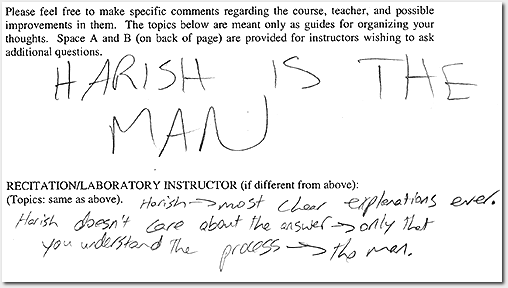
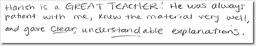
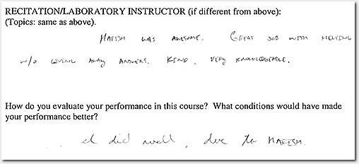

Making sense of the cacophony
… they loved me!
  Some more than others, yes, but there was much love. And this wasn't just in the open-ended questionnaires, the “objective” rating schemes hinted at the same thing too!

But, with the sycophantish nature of the exercise, was I really going to get tips to improve?